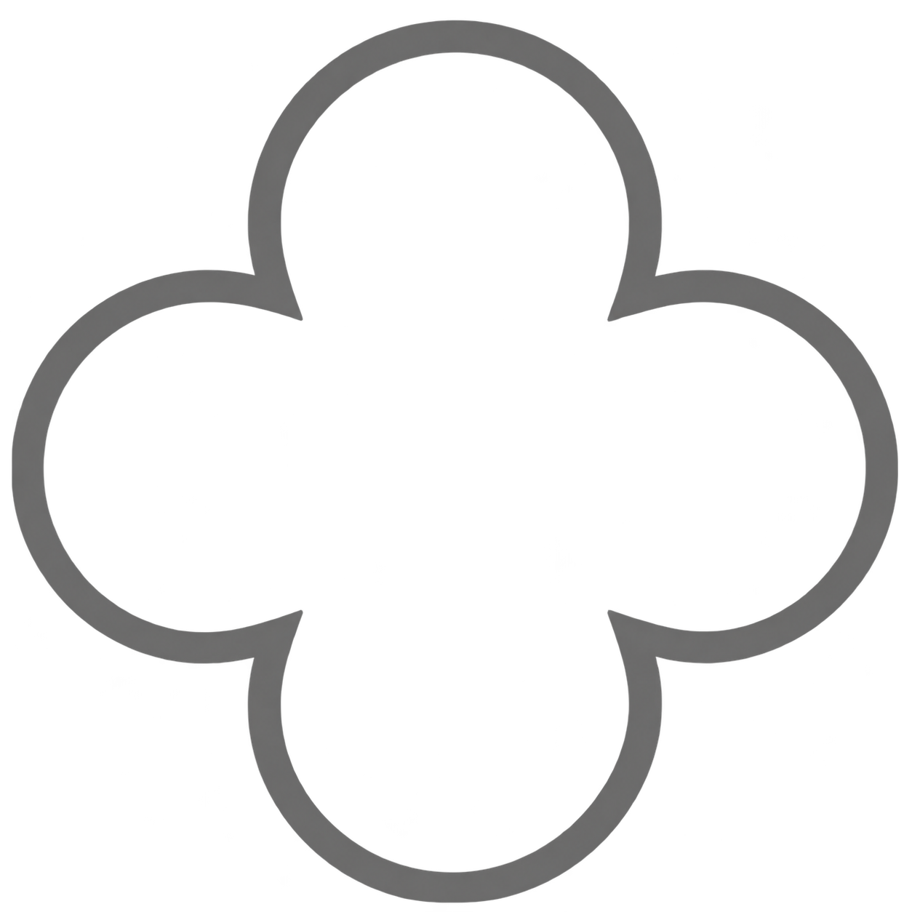
0.37 inch9.5 mmSweet Alhambra


Alhambra is built around a remarkably stable four-lobed outline. Its identity remains recognizable as the motif moves between stones and metals, light and dark colors, small and large scales, and single or repeated arrangements. Rather than inventing a different symbol for each piece, the collection explores variation within one visual system: the shape provides continuity, while its surface and composition remain open to interpretation.
Material is one of the clearest ways the Alhambra motif can change without becoming unfamiliar. Its four-lobed frame can hold luminous mother-of-pearl, opaque onyx, naturally banded malachite, warm carnelian, gold, or diamonds. The stone or metal changes the appearance of the motif, but its boundary continues to connect every version.
Mother-of-pearl is not simply white: its surface reflects shifting pale tones as light moves across it. Onyx works almost in reverse, creating a deep, uniform black field that emphasizes the contrast between the center and gold-beaded edge. Malachite introduces bands of light and dark green, so two examples in the same setting can still look individual.
Carnelian brings another quality to the same form. Its color ranges from rich red to bright orange, and its translucency can change with the direction of light. When a motif is made entirely in gold, the relationship between center and border begins to dissolve: engraving, polishing, and reflected light become the primary visual details. Diamond-set motifs work differently again, turning the interior into a field of many separate reflective points.
The important distinction is between structure and surface. The frame remains recognizable while the interior is open to transformation. A new material does not require a new identity; it creates another reading of an existing one.
The Alhambra motif does not express only one personality. By changing metal, gemstone, and surface, the same four-lobed outline can become airy, graphic, luminous, romantic, or dramatic.
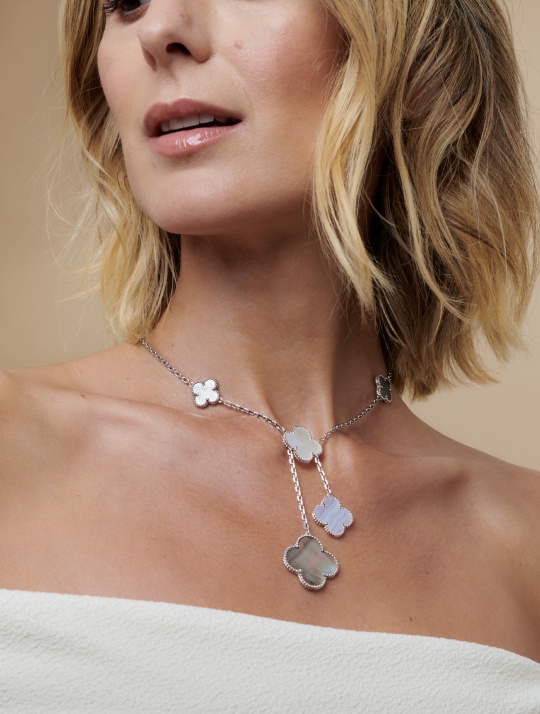
An open yellow-gold frame reads almost like a graphic sign: airy, linear, and direct. Mother-of-pearl softens the motif with a gentle, cloudy glow, while blue chalcedony cools the palette and gives the same outline a quieter, more reserved presence. The structure stays constant, but the mood shifts noticeably through material and color.
Once worn, a motif no longer reads only as an isolated object. Its scale, color, and reflectivity affect how it interacts with skin, clothing, and movement. Even when several motifs appear together, the outline provides continuity while each material contributes a different tone.
Here the interior becomes a field of many points of light. White gold feels crisp and icy, yellow gold feels radiant and ceremonial, and rose gold introduces warmth. The same outline absorbs a different emotional register each time.
Carnelian gives the shape a saturated red presence. Tiger’s eye introduces visible bands and a more earthbound warmth. Guilloché metal changes the mood again: instead of a stone, engraved gold catches light across the entire surface, turning the motif into a radiant object.
The mood changes through material and light,not through shape.
What remains constant is the four-lobed boundary and the beaded edge that frames it. What changes is the atmosphere: cool or warm, quiet or radiant, graphic or delicate. The Alhambra motif works as a stable visual system precisely because it can carry many moods without losing recognition.
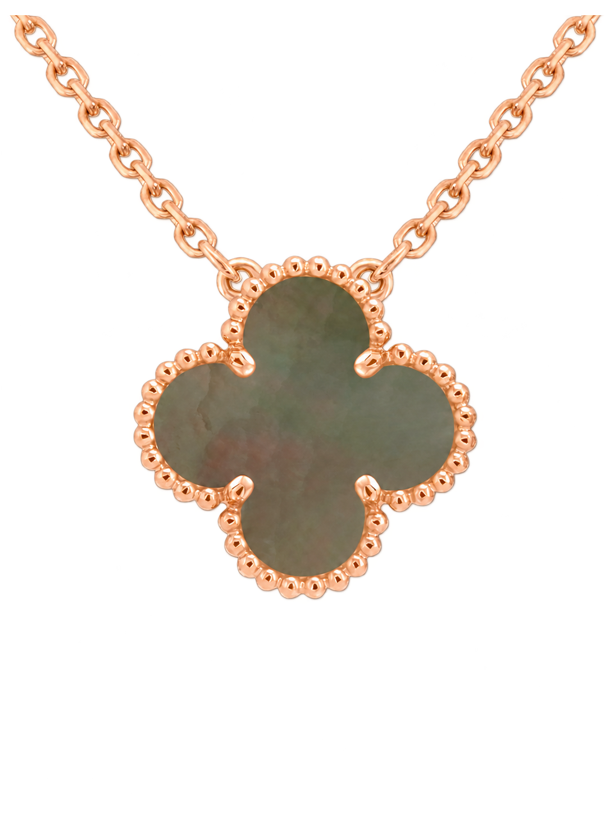
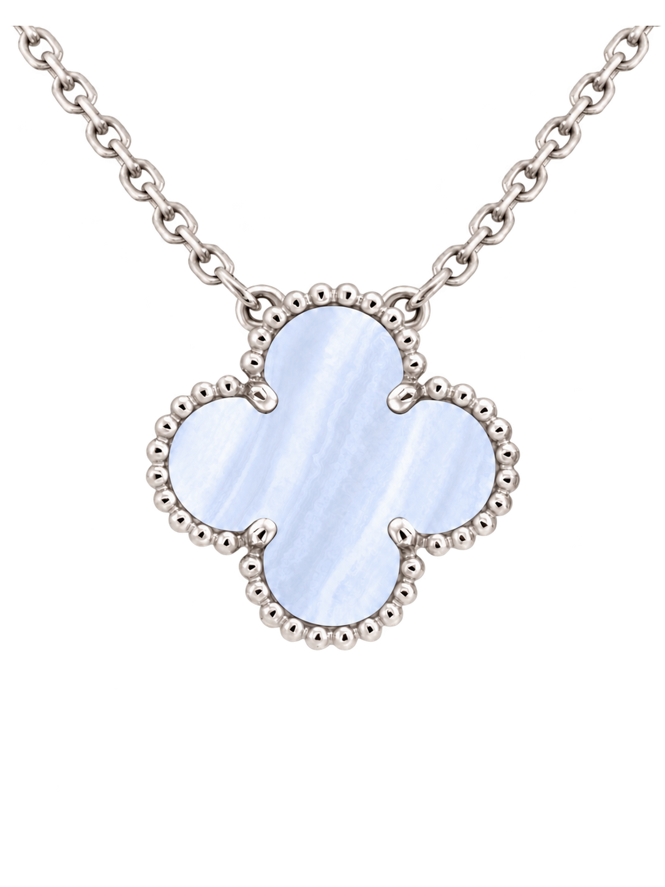
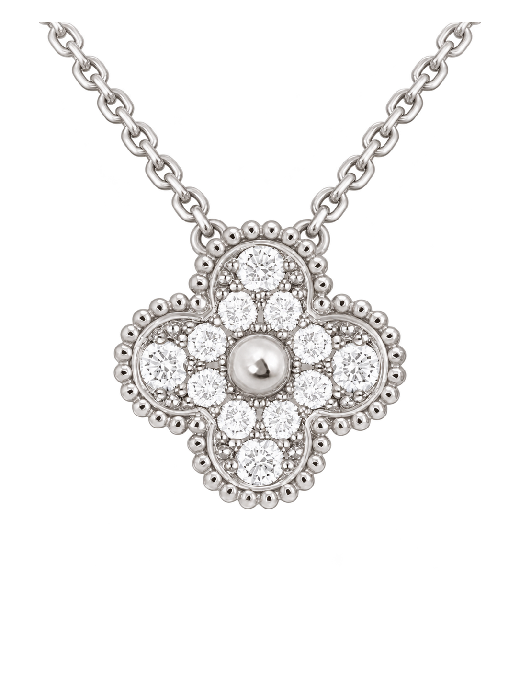
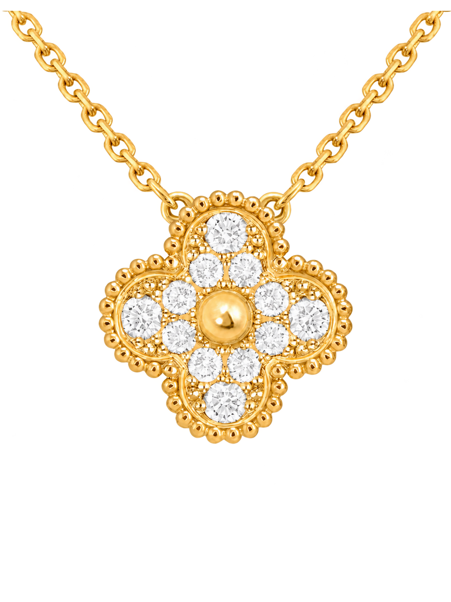
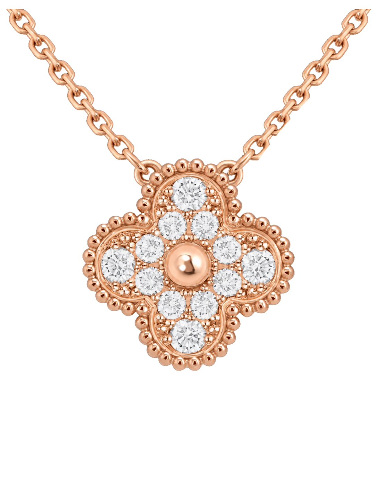
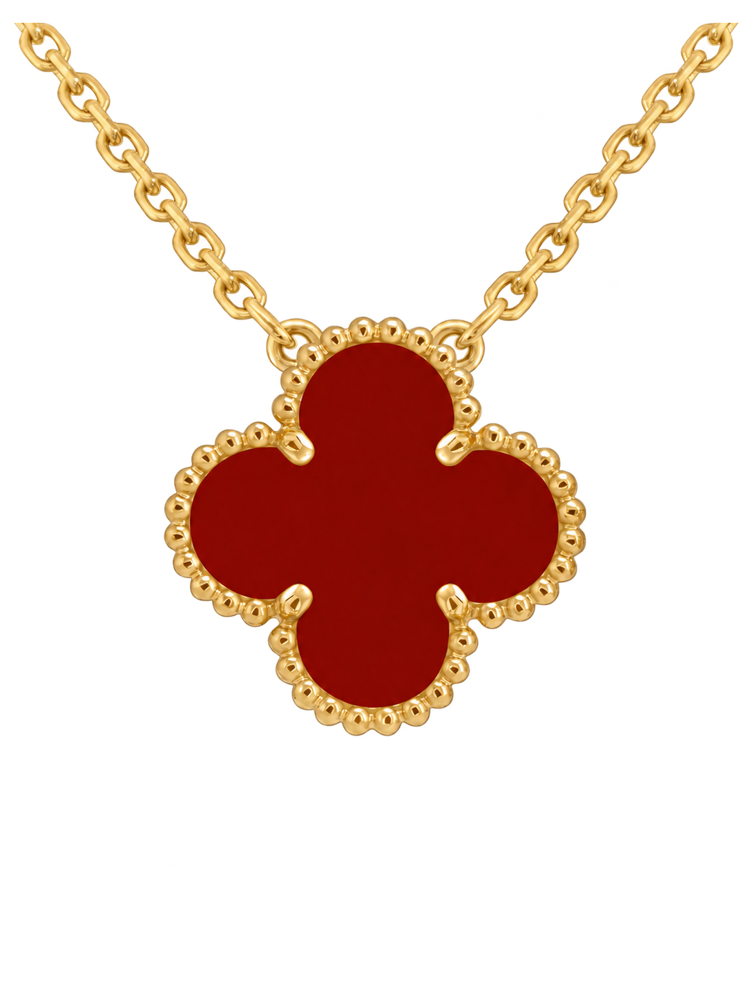
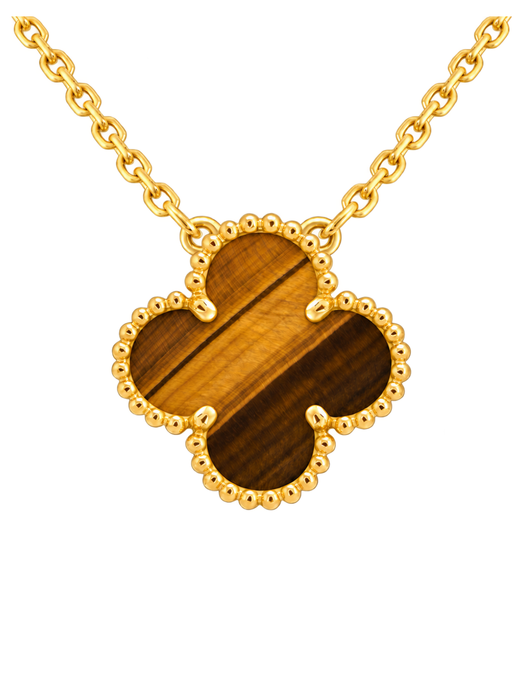
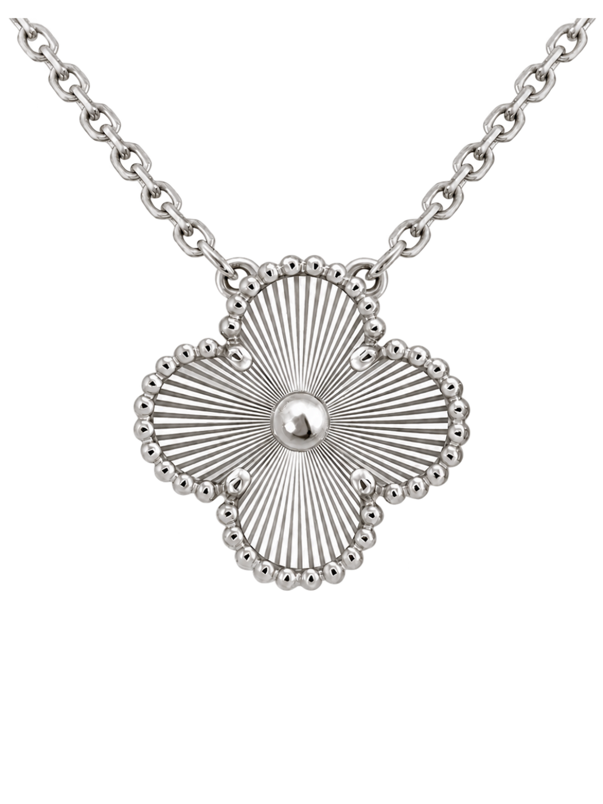
Scale is another variable that leaves the fundamental geometry intact. A four-lobed outline can remain fully recognizable even as it becomes miniature, wearable, or more visibly emphatic on the body.
Scroll to compare how Sweet, Vintage, Pure, and Magic Alhambra keep the same motif while changing its presence through size.

Van Cleef & Arpels’ motif-size guide describes Sweet Alhambra at approximately 9.5 mm, Vintage at 15 mm, Pure at 16 mm, and Magic at 26 mm. On paper these measurements seem close, yet on the body even a few millimeters change how a motif is perceived.

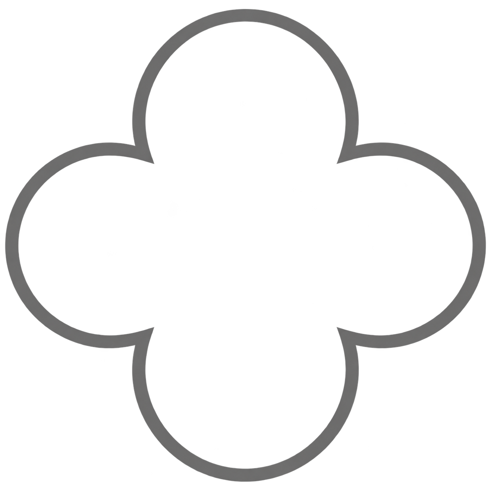
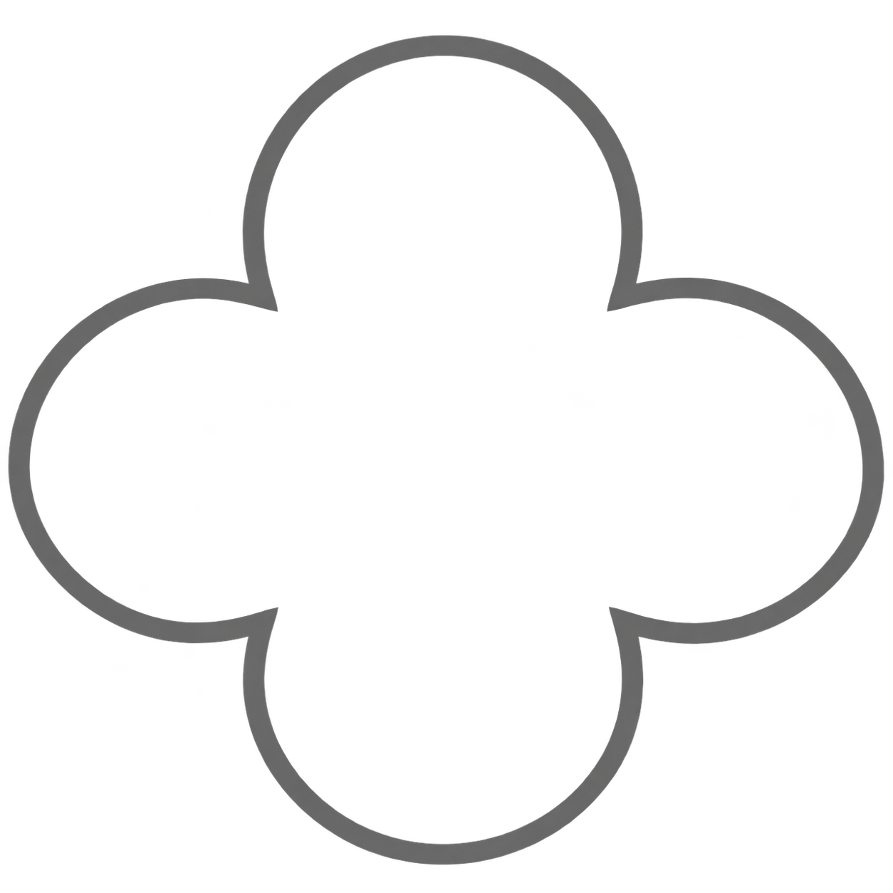
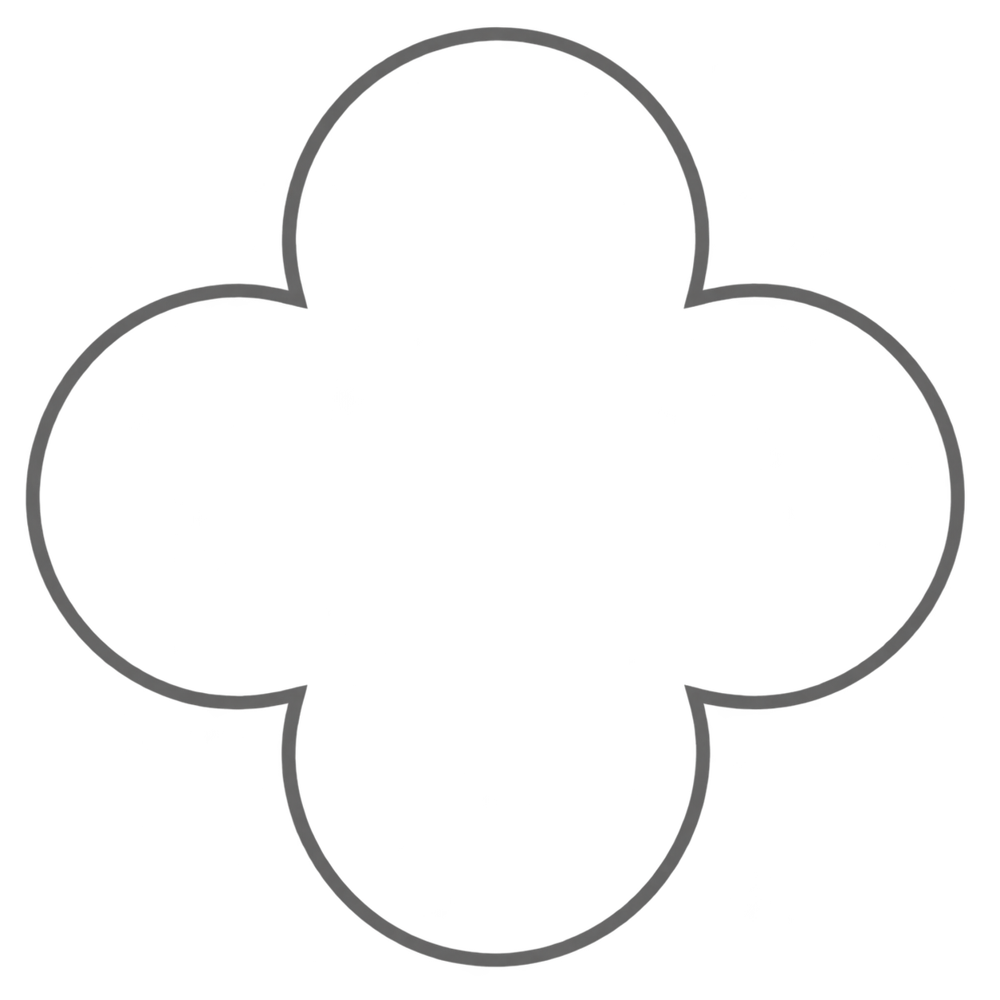
Sweet is miniature and delicate, almost like a punctuation mark. At that size, the outline carries most of the identity. Vintage allows the stone and beaded border to remain more clearly legible while still being compact enough to repeat along a bracelet or necklace.
Pure sits close to Vintage in measurement, but the near-neighbor comparison makes subtle differences in proportion and presence easier to notice. Magic enlarges the form until it becomes a focal object: the interior surface, material bands, and border details all become more visually emphatic.
Scale therefore changes hierarchy as much as dimension. When large and small motifs appear together, the eye moves first toward the larger form and then returns to the smaller ones. The visual language remains the same, but emphasis shifts.
Scale changes presence,
not recognition.
Repetition changes how the motif is perceived. One clover is a self-contained symbol. Five establish a sequence along a bracelet, and the spaces between them become part of the design. Ten motifs extend that rhythm into a longer necklace; twenty create a continuous line whose regularity can be understood even from a distance.
At each stage, the links between motifs are just as important as the shapes. If clovers were crowded together, their separate outlines would become harder to read. Set too far apart, they would lose their collective rhythm. Controlled intervals allow repetition without visual confusion.
The original twenty-motif necklace from 1968 demonstrated the principle: a simple unit could be multiplied without losing its individuality. The collection still uses related configurations across pendants, bracelets, and long necklaces.
From a communication-design perspective, the motif behaves like a module in a graphic system. The module can stand independently, while repeated modules establish relationships, rhythm, and composition. The identity lives in the rules that connect the pieces, not in any one arrangement.
What began as a lucky symbol became a design system by preserving a small set of decisions: a clear four-leaf shape, a recognizable border, controlled intervals, and the freedom to change what happens inside and around them.
The motif supplies the vocabulary. Repetition supplies the grammar. That is how one small form continues generating new interpretations while remaining unmistakably Alhambra.